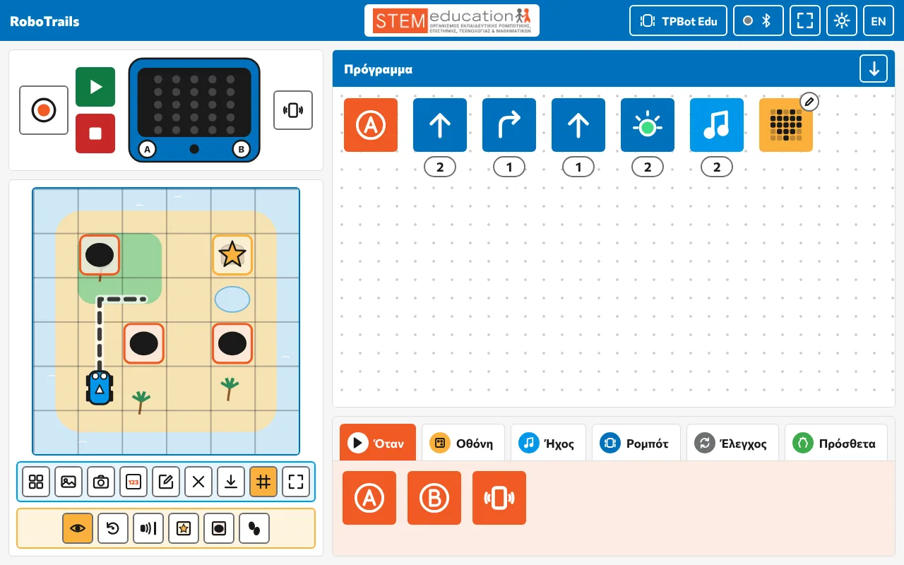

ΓΙΑ ΠΑΙΔΙΑ 5–7 ΕΤΩΝFOR AGES 5–7
Προγραμματισμός ρομπότ με εικόνεςCoding robots with pictures
Σύρετε εικόνες για να προγραμματίσετε ένα ρομπότ micro:bit να κινείται, να ανάβει φώτα, να παίζει ήχους και να δείχνει εικόνες στην οθόνη του. Χωρίς λέξεις, χωρίς εγκατάσταση, σε tablet και υπολογιστή.
Drag pictures to program a micro:bit robot to move, light up, play sounds and draw on its screen. No words, no installation, on tablets and computers.
Δωρεάν. Λειτουργεί σε Chrome ή Edge.Free. Works in Chrome or Edge.


Τι κάνειWhat it does
Εικόνες αντί για λέξειςPictures instead of words
Κάθε μπλοκ είναι μια εικόνα με, το πολύ, έναν αριθμό από κάτω. Τα παιδιά σύρουν και παίζουν.
Every block is a picture with at most one number underneath. Children drag and play.
Δοκιμή χωρίς ρομπότTry it without a robot
Ένα εικονικό micro:bit και μια εικονική πίστα δείχνουν τι θα κάνει το πρόγραμμα, πριν συνδεθεί οτιδήποτε.
A virtual micro:bit and a virtual track show what the program will do, before anything is connected.
Ζωντανός έλεγχος μέσω BluetoothLive control over Bluetooth
Συνδέστε ένα micro:bit μία φορά. Η οθόνη LED, οι ήχοι, τα κουμπιά και η κίνηση δουλεύουν αμέσως, χωρίς λήψη προγραμμάτων.
Connect a micro:bit once. The LED screen, sounds, buttons and movement work straight away, with no program downloads.
Ρομπότ TPBot Edu και TPBotTPBot Edu and TPBot robots
Με το TPBot Edu το ρομπότ διανύει ακριβείς αποστάσεις, κάνει ακριβείς στροφές και λέει πότε φτάνει. Το πλέγμα έχει τετράγωνα 20 cm, όπως ο χάρτης του κιτ.
With TPBot Edu the robot drives exact distances, turns exact angles and says when it has arrived. The grid uses 20 cm squares, like the map in the kit.
Πίστες και παιχνίδιαTracks and games
Φορτώστε μια πίστα ως φόντο, βάλτε στόχο και παγίδες, μετρήστε βήματα. Το micro:bit χαμογελά όταν το ρομπότ φτάνει και στενοχωριέται όταν πέφτει σε παγίδα.
Load a track as the backdrop, place a target and traps, count steps. The micro:bit smiles when the robot arrives and frowns when it falls into a trap.
Εργαλεία για τον εκπαιδευτικόTools for the teacher
Προεπισκόπηση της διαδρομής, επαναφορά θέσης, προσομοίωση αισθητήρων και πλήρης οθόνη για προβολέα.
Route preview, position reset, sensor simulation and a full-screen stage for the projector.
ΞεκινώνταςGetting started
- Χρειάζεστε tablet Android, Chromebook ή υπολογιστή με Chrome ή Edge, ένα micro:bit V2 και, για κίνηση, ένα ρομπότ TPBot Edu ή TPBot.You need an Android tablet, a Chromebook or a computer with Chrome or Edge, a micro:bit V2 and, to drive, a TPBot Edu or TPBot robot.
- Φορτώστε μία φορά ένα μικρό πρόγραμμα στο micro:bit (οδηγίες παρακάτω). Από εκεί και πέρα κανένα παιδί δεν χρειάζεται να το ανοίξει ξανά.Load one small program onto the micro:bit, once (instructions below). After that no child ever needs to open it again.
- Ανοίξτε την εφαρμογή και πατήστε το κουμπί Bluetooth. Διαλέξτε το micro:bit σας: στην οθόνη του εμφανίζεται ένα τικ.Open the app and press the Bluetooth button. Choose your micro:bit: a tick appears on its screen.
- Σύρετε μπλοκ στο πρόγραμμα και πατήστε το πράσινο κουμπί.Drag blocks into the program and press the green button.
Το πρόγραμμα του micro:bitThe micro:bit program
Το micro:bit χρειάζεται ένα μικρό πρόγραμμα που δείχνει τις εικόνες, παίζει τους ήχους, οδηγεί το ρομπότ και στέλνει πίσω τα κουμπιά και τους αισθητήρες. Το φτιάχνετε μία φορά:
The micro:bit needs one small program that shows the pictures, plays the sounds, drives the robot and sends the buttons and sensors back. You make it once:
- Ανοίξτε το makecode.microbit.org και φτιάξτε ένα νέο έργο.Open makecode.microbit.org and start a new project.
- Επιλέξτε JavaScript από τον διακόπτη στην κορυφή και επικολλήστε τον κώδικα του main.ts.Switch to JavaScript at the top and paste the code of main.ts.
- Στις Επεκτάσεις προσθέστε το bluetooth και επικολλήστε τη διεύθυνση
https://github.com/elecfreaks/pxt-TPBot.In Extensions add bluetooth and paste the addresshttps://github.com/elecfreaks/pxt-TPBot. - Στις ρυθμίσεις του έργου ενεργοποιήστε το No Pairing Required.In the project settings turn on No Pairing Required.
- Πατήστε Λήψη και αντιγράψτε το αρχείο .hex στον δίσκο MICROBIT.Press Download and copy the .hex file onto the MICROBIT drive.
ΠίστεςTracks
Μια κοινή βιβλιοθήκη με πίστες για το δάπεδο: ακολούθηση γραμμής, χάρτες, παιχνίδια με στόχο και παγίδες. Κάθε πίστα ανοίγει στην εφαρμογή με ένα πάτημα. Φτιάξατε τη δική σας; Μοιραστείτε την με άλλα σχολεία.
A shared library of floor tracks: line following, maps, target-and-trap games. Every track opens in the app with one tap. Made your own? Share it with other schools.
Οδηγός χρήσηςUser guide
- Τα μπλοκThe blocks
- Η σκηνή και η πίσταThe stage and the track
- Τα ρομπότThe robots
- Εργαλεία εκπαιδευτικούTeacher tools
- Πίστες και παιχνίδιαTracks and games
Συχνές ερωτήσειςFrequently asked questions
Ποιες συσκευές υποστηρίζονται;Which devices work?
Tablet Android, Chromebook, Windows, macOS και Linux με Chrome ή Edge. Στο iPad η εφαρμογή ανοίγει και η προσομοίωση δουλεύει, αλλά ο browser δεν επιτρέπει σύνδεση Bluetooth με το micro:bit.
Android tablets, Chromebooks, Windows, macOS and Linux with Chrome or Edge. On an iPad the app opens and the simulation works, but the browser does not allow a Bluetooth connection to the micro:bit.
Χρειάζεται internet;Do I need internet?
Για να ανοίξει η εφαρμογή και για να φορτώσει η βιβλιοθήκη πιστών, ναι. Μόλις ανοίξει, το πρόγραμμα και η σύνδεση με το micro:bit δεν το χρειάζονται.
To open the app and to load the tracks library, yes. Once it is open, the program and the connection to the micro:bit do not need it.
Ποια ρομπότ υποστηρίζονται;Which robots are supported?
Το TPBot Edu (ακριβείς αποστάσεις και στροφές) και το TPBot (χρονομετρημένες κινήσεις). Η εφαρμογή είναι φτιαγμένη ώστε να προστεθούν και άλλα ρομπότ.
TPBot Edu (exact distances and turns) and TPBot (timed moves). The app is built so that more robots can be added.
Αποθηκεύονται δεδομένα των παιδιών;Is any data about the children stored?
Όχι. Δεν υπάρχουν λογαριασμοί και δεν στέλνεται τίποτα. Οι ρυθμίσεις και το τελευταίο πρόγραμμα μένουν μόνο στη συσκευή. Δείτε την πολιτική απορρήτου.
No. There are no accounts and nothing is sent anywhere. The settings and the last program stay on the device only. See the privacy policy.
Πώς προσθέτω μια πίστα;How do I add a track?
Ανοίξτε τη συλλογή πιστών και ακολουθήστε τα πέντε βήματα στο κάτω μέρος της σελίδας.
Open the tracks gallery and follow the five steps at the bottom of the page.